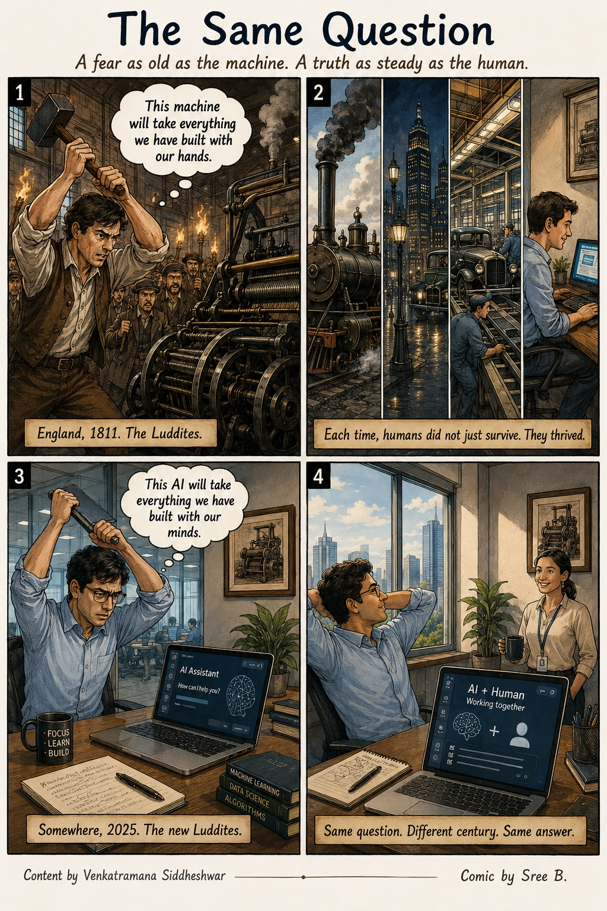

The question we kept returning to — every Saturday, across batches, across years — was that one. And the turn that changed everything: too much for who? If this is the path you have chosen, that question has a different answer entirely.
A fear as old as the machine. A truth as steady as the human.

— Shared by Venkatramana Siddheshwar
The comic above holds the clue — look at what the Luddites feared, and what actually happened. One word from that story will open this page. Or ping Sree and he will send it across.
Somewhere between 2024 and 2025, across multiple ISB CTO batches, a group of technology leaders found themselves asking the same questions. The batches had different people, different timelines — but the questions kept arriving in the same shape. About pace. About direction. About what kind of leader you actually want to be.
We met every Saturday for two hours — learning about AI, emerging technology, and the rapidly shifting landscape that anyone leading technology today has to navigate. Sunil Rawlani was our mentor: patient, incisive, someone who always found a way to turn the question back to you.
When the batches wound down, the group didn't want to stop. Not because we hadn't learned enough — but because something else had started. A habit of reflection. A trust in each other. A willingness to ask: wait, is this actually what I want?
Santhosh, Shiva, Roopa, and several others stepped forward. Sunil stayed. And so did I. The Conscious Leadership group was, and is, an attempt to keep that alive — and to open it to others who are asking the same questions.
From those early conversations, Sunil distilled four anchors. Not rules — anchors. Things to return to when the ground shifts.
— Sunil Rawlani, to the circle
A community of practice. In Buddhist and Vedic tradition, the sangha is one of the three refuges — alongside dharma (the teaching) and the teacher. It is not a network. It is not a cohort. It is a group of people who walk alongside you, who have agreed to be honest with each other, and who hold the space for you to hear your own voice.
Thanks to Sunil's push, Shiva, Santhosh, Roopa and Sree got together to make it happen.
It is not a leadership framework. It is not a course, a certification, or a methodology. It is, in the simplest terms, an invitation to pause.
The group serves as a mirror. When you bring a question — should I take this role, should I build this thing, should I say yes to this — the group does not give you an answer. It asks: is this what you want? If the answer is yes, great. If the answer is no, great. Either way, you return to your work with greater clarity than you left with.
In a world where AI is rewriting the pace of everything, that pause is not a luxury. It is the work. A confident inner self — grounded, resolved, present — is what allows you to lead well in a landscape where the ground keeps shifting.
Consciousness. Awareness. The quality of being awake to what is happening — inside you, not just around you. In leadership, chetana is the difference between reacting to what the world throws at you and responding from a place you have consciously chosen. It is the thing you are trying to protect when you pause.
Sunil Rawlani brought this word into the room — not as a definition, but as a prompt to reflect.
We do technology for a living. But we are human too. We spend most of our time inside the virtual — building it, shaping it, sometimes disappearing into it. And somewhere in all of that, we need to stop. Pause. Breathe. Reflect. And remember what we are walking back to.
The choice is ours — to embrace it, with everything it brings, the good and the difficult. And to remember: you have the freedom to change course. Always.
— Sree Balakrishnan, inspired by Sunil Rawlani
The Bhagavad Gita, the Buddha, Laozi, Marcus Aurelius — four traditions, four centuries apart, arriving at the same four words: inner renunciation amidst outer action. For a technology leader navigating AI, this is not abstract philosophy. It is the practice.
The group grows through existing members — if someone in the group knows you, they can bring you in. If this resonates and you would like to find your way here, reach out to me or Sunil directly.